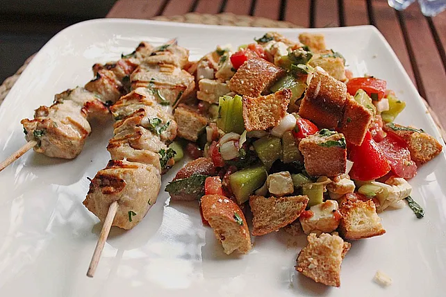

Brotsalat mit Schafskäse
Startseite

Ein Lckeres und Schnelles Gericht, für den noch schneller kommenden Hunger :D
Die angegebenen Mengen sollten für ca. 4 Portionen ausreichen (Zubereitungszeit ca. 25 min.)
- 8 Scheiben Weißbrot
- 1 Bund Frühlingszwiebeln
- 200g Schafskäse
- 1/2 Salatgurke
- 3 große Tomaten
- 3 Zehen Knoblauch
- 1 Bund Petersilie
- 1 Bund Basilikum
- 1 EL Balsamico
- 6 EL Olivenöl
- 1 EL Senf (Scharf)
- 1 TL Zucker
- Salz und Pfeffer
- Das Brot würfeln, die Frühlingszwiebeln putzen und in feine Ringe schneiden.
- Den Schafskäse würfeln, die Gurke waschen, schälen und fein würfeln.
- Die Tomaten waschen, Stielansätze herausschneiden, Fruchtfleisch entkernen und fein würfeln.
- Den Knoblauch schälen und sehr fein würfeln. Petersilie und Basilikum waschen, Blättchen grob hacken.
- Für die Marinade Essig, Öl, Senf, Zucker, Salz und Pfeffer verrühren, bis eine glatte Soße entstanden ist.
- Das Brot in eine große Schüssel geben und mit der Soße begießen.
- 15 Minuten ziehen lassen.
- Dann alle anderen Zutaten zugeben, alles mischen.
- Es sich schmecken lassen!